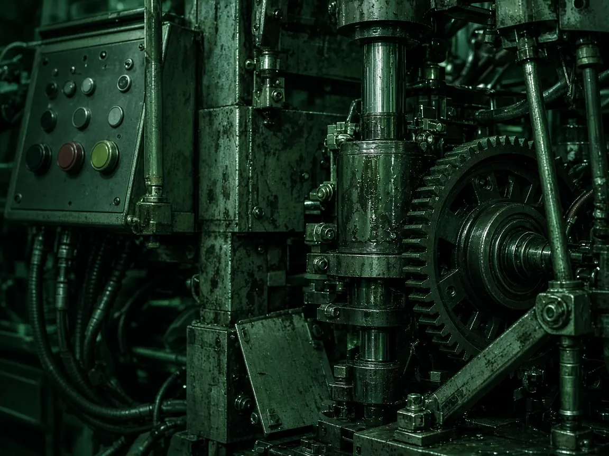

Chennai manufacturers European market access
CE Certification & CE Marking Services in Chennai
Prepare your product for the European market with the right CE compliance pathway — not a generic certificate, and not a logo applied too early.
- Product-specific assessment
- EU legislation mapping
- Notified Body coordination where required
01 — Product review
Need CE certification for your product in Chennai?
CE marking is not the same process for every product. Requirements depend on category, intended use, design, risk classification and the European legislation that actually applies.
Intended use
Product design
Technical specifications
Risk classification
Applicable EU legislation
Harmonised standards
Available test reports
Third-party assessment
Some products can follow a manufacturer conformity-assessment route. Other products require assessment by an appropriately designated European Notified Body.
Start with a product review02 — The stamp is last
00/ 10 steps complete
A CE mark should only be applied after applicable European requirements, conformity assessment and supporting documentation are in place.
Our CE marking process
- Share product informationName, photographs, datasheet, specifications, manuals, existing reports and target European market.
- Initial regulatory reviewWe determine the likely regulatory scope for the product as it will be placed on the European market.
- Regulations & standards mappingApplicable legislation, technical requirements and relevant EN, IEC or ISO standards are identified.
- Compliance gap assessmentExisting documentation and test evidence are reviewed against the mapped requirements.
- Testing planWhere testing is required, applicable tests are identified and coordinated with appropriate facilities.
- Technical documentationThe technical file is prepared, organised or reviewed as evidence of conformity.
- Conformity assessmentThe manufacturer or third-party route is followed based on the relevant legislation.
- Declaration of ConformityThe information needed for the applicable EU Declaration of Conformity is assembled and reviewed.
- Labelling reviewCE placement, manufacturer identification, warnings, instructions and Notified Body numbers where applicable.
- Affix CE markingOnly after applicable requirements are satisfied.
03 — End-to-end support
CE marking services for Chennai manufacturers & exporters
From identifying applicable European legislation to technical documentation, testing support and Notified Body coordination where required.
CE applicability assessment
Not every product requires CE marking. We review category, intended use, technical characteristics and the European target market to determine whether CE marking applies.
EU regulation & directive identification
A product may fall under one or more pieces of European legislation. We identify the regulations or directives that may apply before conformity assessment begins.
Harmonised standards identification
Applicable European harmonised standards may provide a structured route for demonstrating conformity. We help identify relevant EN, IEC, ISO or other technical standards.
Product testing support
Depending on the product, laboratory testing may be necessary. We help identify required tests and coordinate the process with appropriate testing facilities.
Product risk assessment
We help manufacturers identify foreseeable hazards, evaluate associated risks and document suitable risk-control measures.
Technical file preparation & review
A properly prepared technical file provides evidence supporting product conformity, including descriptions, drawings, component information, standards, test reports, labels, manuals and declaration documentation.
Conformity assessment support
We identify the appropriate conformity-assessment route. The exact route may vary considerably between product categories.
Notified Body coordination
A European Notified Body is not required for every CE-marked product. Where independent assessment is required, we support document preparation and coordination with an appropriately designated organisation.
EU Declaration of Conformity support
After applicable requirements have been addressed, we assist with reviewing the information needed for the declaration.
CE marking & product labelling review
Placement of the CE mark, product identification, manufacturer information, warnings, user instructions, packaging information and Notified Body identification where applicable.
04 — Product categories
Which products may require CE marking?
Select a category to see how CE support typically applies. Unsure? Send the product name, a photograph, the datasheet and intended use.

Machinery & industrial equipment
CE marking support for industrial systems
Industrial machinery, production and packaging lines, material-handling equipment, processing equipment, control systems and special-purpose machines.
- Industrial machinery
- Production machinery
- Packaging machinery
- Material-handling equipment
- Processing equipment
- Industrial systems and control systems
06 — Exporting from Chennai to Europe
Don’t start with a certificate. Start with the correct regulatory pathway.
One of the most common CE compliance mistakes is beginning with testing or requesting a certificate before confirming which legislation applies.
The usual mistake
Start with a certificate
Beginning with testing or a logo before the legislation is confirmed can lead to:
- Incorrect testing
- Wrong standards
- Incomplete technical files
- Incorrect certificates
- Export delays
- Product labelling errors
The better process
Start with the product
- 01Understand the product
- 02Identify applicable European legislation
- 03Identify applicable standards
- 04Determine the conformity-assessment route
- 05Identify required product testing
- 06Prepare technical documentation
- 07Complete required conformity assessment
- 08Prepare the applicable declaration
- 09Review product labelling
- 10Affix CE marking after requirements are satisfied
07 — Technical file
Documents you may need for CE marking
The exact documentation depends on the product and applicable legislation. Typical evidence may include:
- Product description
- Model information
- Engineering drawings
- Circuit diagrams
- Bill of materials
- Component details
- Product specifications
- Risk assessment
- Standards list
- Test reports
- Calculations
- Design verification
- Manufacturing information
- Quality-control records
- Product labels
- Packaging artwork
- Installation instructions
- User manual
- Safety instructions
- EU Declaration of Conformity
- Notified Body documentation
Already have test reports? Send them. Existing documentation may show whether additional testing is necessary.
08 — Why Sustainable Futures PCS
A product-specific approach, not a one-path certificate mill
Product-specific approach
We focus on the actual product instead of recommending the same certification pathway for every manufacturer.
Regulatory assessment before testing
Identify the likely compliance route before committing resources to laboratory testing.
Technical documentation support
Assistance organising the technical evidence required to demonstrate product conformity.
Testing coordination
Support identifying and coordinating applicable product tests based on the compliance pathway.
Conformity assessment guidance
Understand whether manufacturer assessment or independent conformity assessment may be required.
Notified Body support
Where legislation requires a Notified Body, receive assistance with document preparation and coordination.
Support for Chennai manufacturers
Dedicated CE marking support for manufacturers and exporters across Chennai and surrounding industrial areas.
Clear project scope
Understand the proposed process, required documentation, expected activities and quotation before proceeding.
09 — Quotation
How much does CE certification cost in Chennai?
There is no single fixed CE certification cost applicable to every product. A product review is required before an accurate quotation can be prepared.
- 01Product category
- 02Applicable EU legislation
- 03Applicable standards
- 04Product complexity
- 05Risk classification
- 06Number of models or variants
- 07Required laboratory testing
- 08Existing test reports
- 09Technical-documentation readiness
- 10Notified Body involvement
- 11Factory or quality-system assessment, where applicable
- 12Additional regulatory or representative requirements
10 — Questions
Frequently asked questions
Straight answers on CE marking, Notified Bodies, cost, timelines and technical files.
What is CE certification?
CE marking indicates that the manufacturer has taken the required steps to demonstrate conformity with applicable European product legislation for a product that falls within CE-marking requirements.
How do I get CE certification in Chennai?
Start by identifying whether CE marking applies to your product, which European legislation and standards are relevant, what conformity-assessment route applies and whether testing or a Notified Body is required. Sustainable Futures PCS can assist manufacturers in Chennai with this assessment and the subsequent compliance process.
Is CE marking mandatory for products exported from Chennai to Europe?
CE marking is required for products that fall within the scope of European legislation requiring CE marking when those products are placed on the applicable European market. It is not required simply because a product is manufactured in Chennai or India.
Does every product require CE certification?
No. CE marking only applies to product categories covered by relevant European legislation requiring the CE mark. An applicability assessment should therefore be completed first.
Is a Notified Body mandatory for CE certification?
No. Some conformity-assessment procedures allow manufacturers to demonstrate conformity themselves. Other products or conformity-assessment routes require an appropriately designated Notified Body.
What is the CE certification cost in Chennai?
The cost depends on the product, applicable legislation, testing requirements, number of models, documentation readiness and whether third-party conformity assessment is required. A product review is required before an accurate quotation can be prepared.
How long does CE certification take?
The timeline depends on the complexity of the product, testing requirements, technical-documentation readiness and whether independent conformity assessment is required.
Can my existing laboratory test reports be used?
Possibly. Existing reports should be reviewed against the applicable legislation, standards, test methods, laboratory scope and product configuration before determining whether additional testing is required.
What is a CE technical file?
The technical documentation contains evidence demonstrating how the product satisfies applicable requirements. It can include product specifications, drawings, risk assessment, standards, testing evidence, instructions, labelling and conformity documentation.
Can one CE assessment cover multiple models?
Potentially, depending on the technical differences between the models, applicable requirements and supporting evidence. The complete product family should be reviewed before deciding the appropriate approach.
Is CE marking a quality certification?
CE marking is primarily related to conformity with applicable European product legislation rather than being a general product-quality award.
Does CE marking expire?
The compliance documentation must remain valid and be reviewed when relevant changes occur, such as modifications to the product, applicable legislation or other factors affecting conformity.
11 — Enquiry file
Get a CE marking quote in Chennai
Tell us about your product. We review the basic information, identify the likely regulatory and conformity-assessment requirements, then share scope, next steps and a product-specific quotation.
- 01Share your product and contact details
- 02Our team reviews the basic product information
- 03We identify the likely regulatory requirements
- 04Receive scope, guidance and a quotation
Or email info@sustainablefuturespcs.org with your datasheet and photographs.
Chennai → Europe
Confirm your CE compliance pathway before you invest in testing or certification.
EU legislation identification · Standards mapping · Product testing · Risk assessment · Technical documentation · Conformity assessment · Notified Body coordination where required · Declaration & CE marking support